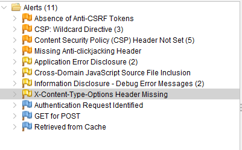
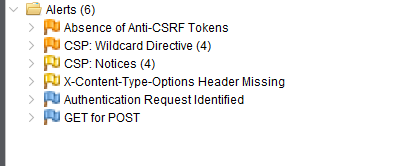
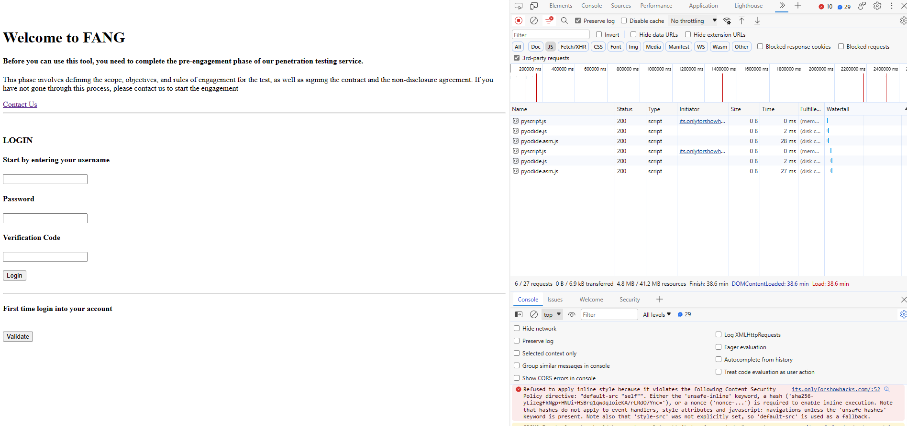

Goal
In this assignment, my goal was to look at ways on how individuals can improve their SOHO network security.
I followed the Zero Trust model, deepened my understanding of the CyBOK Network Security principles through building a webserver and hosting my application on-prem. 🦹
This allowed me create a sandbox to test various case studies of a home business requirements.
Application Layer Threats: Distributed denial-of-service attacks (DDoS) attacks, HTTP floods, SQL injections, cross-site scripting, parameter tampering, and Slowloris attacks, Presentation Layer Threats: Phishing attacks, Session Layer Threats: Hijacking attacks, Transport Layer Threats: Reconnaissance and DoS attacks, Network Layer Threats: Man-in-the-middle attacks, Data-Link Layer Threats: Spoofing attacks, Physical Layer Threats: Sniffing attacks.
The Journey
Step 1: Install Linux Ubuntu
- Dual Boot Windows machine with Linux Ubuntu
-
Hardware setup and Troubleshooting
Finding the solution took a few videos, but I finally got Bitlocker fully disabled. It is worth noting that Bitlocker is Windows additional data encryption security feature and disabling this opens up the machine to attacks. However, as demonstrated by Andy Malone MVP in How to HACK Windows Bitlocker - MUST SEE!, it is not hard to find this key and the convenience of having it off is currently exceeding the security benefit.
💢 Windows initially did not allow dual-boot (or reboot Windows) until I entered the Bitlocker Key that I did not have.
💪 The solution was to enable SECURE BOOT again and run the following CLI command to find the key on the laptop.
Resources
How to Disable Bitlocker Encryption in Windows 11
Find Your BitLocker Recovery Key
Step 2: Install Webserver
- I instaled NGINX, instead of the other option Apache, as the researched showed Nginx to be more secure.
| Tool | Description |
|---|---|
| Flask | Web Application Framework |
| SQLite3 | Database |
| Gunicorn | Web Server Gateway Interface |
| Nginx | Proxy Server |
| Cloudflare | DNS |
Step 3: Port Forwarding

| Threat | Category |
|---|---|
| Cloudflare | Tunnel |
Step 4: Improve Security
Security Goals Identify common vulnerabilites of a SOHO Network and ways to prevent them.
 LAN Architecture
Attacker Models

STRIDE
Spoofing
Tampering
Repudiation
Information disclosure (privacy breach or data leak)
Denial of service
Elevation of privilege
MITRE ATT&CK
| Name | Description |
|---|---|
| Reconnaissance | The adversary is trying to gather information they can use to plan future operations. |
| Resource Development | The adversary is trying to establish resources they can use to support operations. |
| Initial Access | The adversary is trying to get into your network. |
| Execution | The adversary is trying to run malicious code. |
| Persistence | The adversary is trying to maintain their foothold. |
| Privilege Escalation | The adversary is trying to gain higher-level permissions. |
| Defense Evasion | The adversary is trying to avoid being detected. |
| Credential Access | The adversary is trying to steal account names and passwords. |
| Discovery | The adversary is trying to figure out your environment. |
| Lateral Movement | The adversary is trying to move through your environment. |
| Collection | The adversary is trying to gather data of interest to their goal. |
| Command and Control | The adversary is trying to communicate with compromised systems to control them. |
| Exfiltration | The adversary is trying to steal data. |
| Impact | The adversary is trying to manipulate, interrupt, or destroy your systems and data. |
/Optimizing server networks and web application firewall configuration
/Reviewing and performance-testing existing server systems and web products
/Hardening networks, hosts, web servers and applications
/Implementing web server controls and active defense mechanisms
/Using command-line utilities to test web servers and extract logs
/User account management /Structured Query Language (SQL) /Network traffic packet capture /The vi editor /Backup and restore /Hardware setup and troubleshooting /Network routers and firewalls /Network switches
/Optimizing server networks and web application firewall configuration /Reviewing and performance-testing existing server systems and web products /Hardening networks, hosts, web servers and applications /Implementing web server controls and active defense mechanisms /Using command-line utilities to test web servers and extract logs
- Firewalls
- Scripting and programming laguages
- Knowledge of network design and infrastructure
- Security
Website hosting DNS Services
Networking Applications
Local Area Networks (LANs)
Connected Networks and the Internet
Bus Networks
**Wireless Networks**
Fully Distributed Networks: DHTs and Unstructured P2P Networks
Software-Defned Networking and Network Function Virtualisation
-
Network Protocols and Their Security
Security at the Application Layer
Email and Messaging Security
Hyper Text Transfer Protocol Secure (HTTPS)
DNS Security
Network Time Protocol (NTP) Security
Distributed Hash Table (DHT) Security
Anonymous and Censorship-Free Communication
Security at the Transport Layer
TLS (Transport Layer Security)
Public Key Infrastructure
TCP Security
UDP Security
QUIC
Security at the Internet Layer
IPv4 Security
IP Spoofng
Fragmentation Attacks
VPNs and IPsec
NAT
IPv6 Security
Routing Security
Within an Autonomous System (AS)
Across ASs
ICMP Security
Security on Link Layer
Port-based Network Access Control (IEEE 802.1X)
WAN Link-Layer Security
Attacks on Ethernet Switches
Address Resolution Protocol (ARP) / Neighbor Discovery Protocol (NDP)
Network Segmentation
Wireless Security
Bus Security
-
Network Security Tools
Firewalling
Application Gateway (AG)
Circuit-level Gateway (CG)
DMZ
Intrusion Detection and Prevention Systems
Intrusion Prevention System (IPS)
Network Security Monitoring
SDN and NFV Security
Network Access Control
Zero Trust Networking
DoS Countermeasures
-
Other Network Security Topics